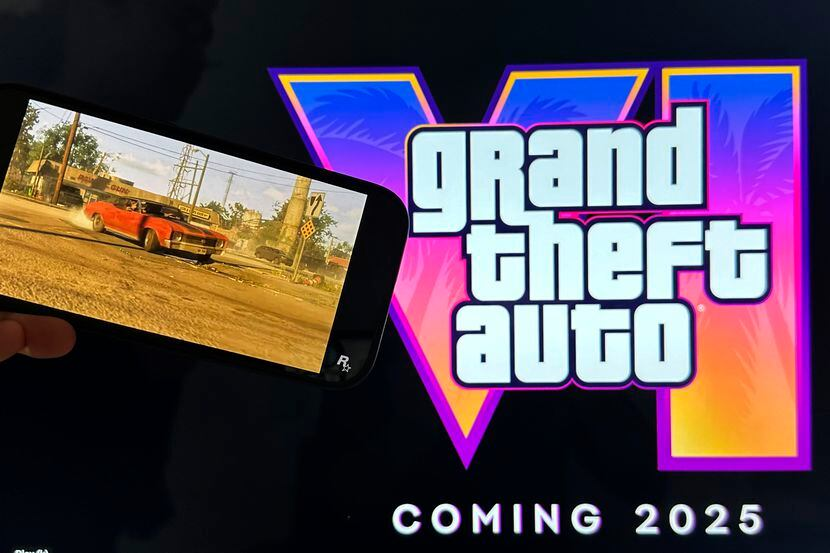
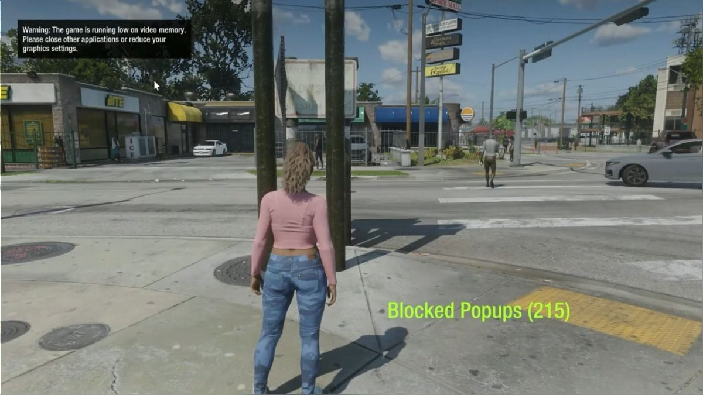
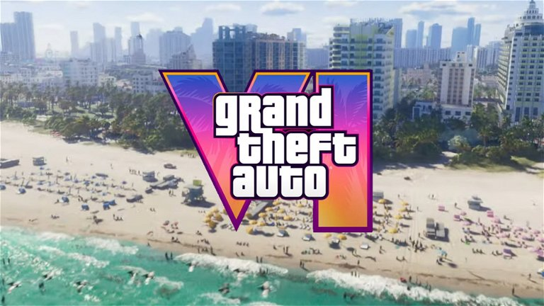

Grand Theft Auto (GTA) de Rockstar Games

'GTA VI' está en su fase final de desarrollo. Y aunque Rockstar no ha dado más detalles sobre fechas muy concretas, estado del proyecto y demás cuestiones, el hype está en el aire. Cada vez que se filtra algún dato o posible cuestión técnica sobre el futuro juego, internet arde, los trending topics se disparan y los jugadores se preguntan si esta nueva entrega supondrá una revolución de la industria como lo supusieron todas los demás
¿Qué fecha de lanzamiento tiene 'GTA VI'?
LA fecha de lanzamiento oficial es en el año de 2025.
Algo sabíamos antes del anuncio: Rockstar afirmaba que estaba desarrollando el juego desde antes de abril de 2020. Si tenemos que establecer alguna comparación, 'GTA V' comenzó a desarrollarse en 2008 y salió a la venta en 2013, lo que daba a 'GTA VI' una fecha tentativa de 2025. Rockstar pareció pseudoconfirmarlo al hablar de lanzamientos que marcarán "nuevos estándares en nuestra industria" para el año fiscal 2025, es decir, a partir de ya entrado 2024.

¿En qué formatos veremos 'GTA VI'?
Podemos afirmar con casi total seguridad (aunque no hay nada oficial) que veremos 'GTA VI' en Playstation 5, Xbox Series X/S, tal y como afirma el primer tráiler y, también con seguridad, pero posiblemente un tiempo después del lanzamiento inicial, como suele ser habitual en Rockstar, en PC. Es dudoso que el estudio pierda tiempo llevando el juego a PS4 y Xbox One, aunque el historial de la franquicia y su multiplicidad de formatos permita albergar ciertas dudas.

¿Qué ambientaciones se barajan para esta entrega?
Vice City y, más allá de eso, el estado de Leonida es lo que confirma en el tráiler. Antes de eso ha habido rumores, unos más fiables que otros. Se habla, obviamente, de un mapeado absolutamente monstruoso (pese a otras fuentes que hablan de un espacio más contenido con sucesivas ampliaciones), y el canal especializado 'Inside Gaming' habla de que el proyecto se desarrolla bajo el nombre en código 'Project Americas'.
